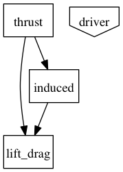
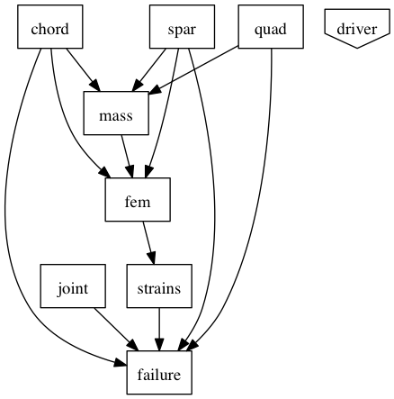
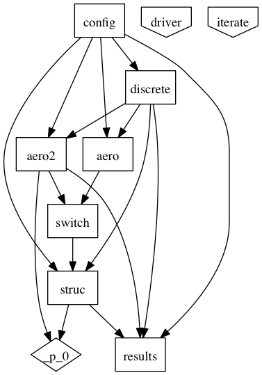

The Atlas OpenMDAO plugin is organized in a hierarchical manner, separating structural from aeronautical analysis through the use of OpenMDAO assemblies.
The Aero() assembly contains all components related to thrust, lift, drag, and induced velocity calculations, which together total 3 components.
The ‘Structures()’ assembly contains all components related to FEA, structural deformation, and materials properties, which together total 8 components.
The AeroStructural() assembly contains both a low-fidelity and high fidelity Aero() instance, along with a Structures() instance.
This assembly’s execution iterates twice between aero and structural disciplines. The low fidelity Aero() assembly computes induced velocity using a simple blade element model. Structural deformation is then computing by the Structures() assembly. This is then fed to a higher fidelity aero assembly, Aero2(), which uses a more accurate vortex wake calculation. Structural deformation is then computed one last time.
The values for input parameters (and potential design variables) are set in the config() component, which propagates values throughout the rest of the assembly.
AeroStructural() also contains a DiscretizeProperties() component, which takes discretization parameters as input from config(), and outputs variables discretized in space (typically along the rotor blades).
Finally, the results() component aggregates the final results of the assembly execution, and computes several values relevant to the objective and constraints for the optimization problem. These include total power, aerodynamic
jig and dihedral angles.
The AtlasConfiguration() component acts as the starting point for an optimization. It exposes design variables and configuration parameters, and propagates their values appropriately.